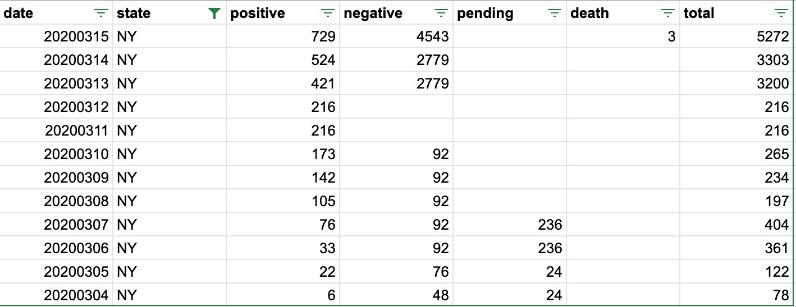
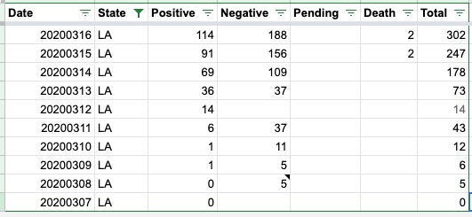
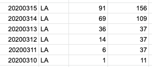
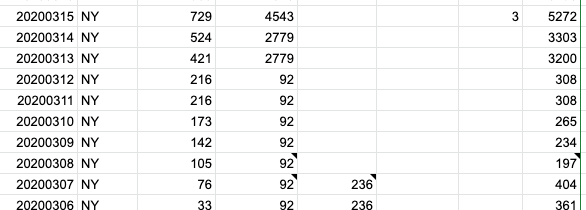

Clarification on /states/daily counts
Are the values in /api/states/daily cumulative or new tests per day?
I assumed they were cumulative, but noticed that the total value decreases over time for certain states (e.g. New York).
Comments
So what happened in the example you emailed in, @plmrry—which, thanks!—is that NY stopped reporting two classes of numbers (negatives and pendings), and we didn’t carry over the old numbers. Normally we DO carry over even old negatives and pendings, and we can look into that one.
I can fix up the NY data to carry forward the negatives. I did the same for MD where the negatives weren’t carried forward for a few days. Pending I just let go blank when they stop reporting.
I’ve gotten the same question about our spreadsheet…if data on US Daily 4p ET is “daily” or “cumulative”. We should clarify by updating the column title? (Or will that break things…for people who are scraping us?)
I would be very much in favor of clarifying somewhere in the sheet and will leave it to @hammer to decide how to do it without breaking things
Has this been fixed? I just got an email from WSJ asking about it.
I think documenting in the spreadsheet is hard so it’s best to document on the website. We’ve successfully buried the spreadsheet link at this point so if you end up there without seeing any of our documentation and you miss the README tab that links to the website I’m sorry.
@rypan for your particular question it’s cumulative.
Another question I get regularly: what do update time and check time mean on the current tab, and how are the daily tabs computed?
I suggest we put this information on the /data for now.
I’m bringing in someone from Politico with data questions
Sometimes the negative cases are null, which brings the total down day by day.
For example, in Louisiana, negative cases are 37 on March 11 and March 13, but null on March 12. This makes the total cases 51, 14, then 51, which I believe is in correct.
Another example of negatives in NY the 11th and 12th. 
We are in the midst of our most comprehensive daily update, data folks will be available to answer questions soon.
Hello - there are a couple of things that are causing the Total number discrepancy.
-
States would start reporting three data points - Positive, Negative, and Pending and then add them up. A number of states have transitioned to reporting only Positive values, which would render our initial totals obsolete. The above NY example is a perfect illustration of this challenging and evolving data-scape.
-
As for LA @bzjin, that is an example where I did not enter a negative value for the day. The data on the 12th is missing a Negative value and needs to be corrected. Thank you for helping us catch and correct such errors. 
The missing LA number is likely because LA stopped reporting negatives for a while and someone failed to carry over the previous negative count.
Apart from mortality, there isn’t a statistic for “recovered” in the time series for states. We need that to construct SIR/SEIR models in order to get the right “Infected - I” counts. Is there a possibility you could add these?
LA has been rectified: 
NY is rectified: 
They should be cumulative, but there are some data points that may have been revised do to a change in reporting methods. Do you have examples?